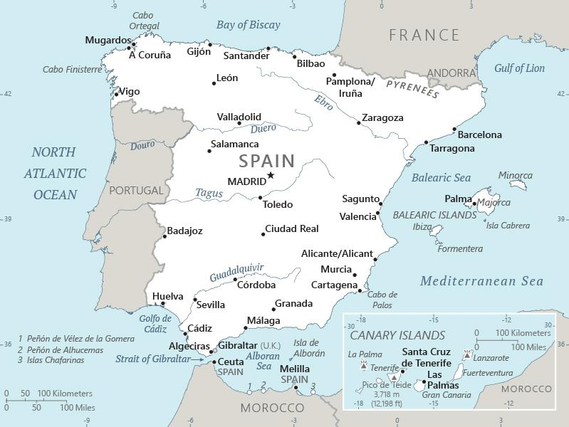

Genel Bilgiler
İspanya (Kingdom of Spain), Güneybatı Avrupa’da yer alan anayasal monarşiyle yönetilen bir ülkedir. Başkenti Madrid’dir. Yaklaşık 47-50 milyon nüfusa sahiptir. Resmî dil Kastilya İspanyolcası’dır; Baskça, Katalanca, Galician ve Aranese gibi bölgelerde konuşulan başka resmi diller de vardır. Para birimi Euro’dur. Ülke Avrupa Birliği, NATO ve diğer uluslararası kurumların üyesidir.
İspanya, İber Yarımadası’nın büyük bölümünü kaplar; batısında Portekiz, kuzeydoğusunda Fransa ve Andorra ile kara sınırları; güneydoğusunda Cebelitarık Boğazı üzerinden Kuzey Afrika’ya (Fas) deniz sınırı bulunur. Doğusunda Akdeniz, kuzeyinde Biscay Körfezi (Kuzey Atlantik), güneyinde Akdeniz ve Atlas Okyanusu kıyıları vardır. Yüzölçümü yaklaşık 505.990 km²’dir.
Başkent: Madrid
Kıta: Avrupa
Yüzölçümü: 505.990 km²
Nüfus (2025): 47.450.795

Bayrak Anlamı: İspanya bayrağı yatay üç şeritten oluşur: kırmızı-sarı-kırmızı. Ortadaki sarı şeridin genişliği diğerlerine göre iki kat daha fazladır ve bu sarı şeridin ortasında devlet armasını barındırır. Kırmızı ve sarı renkler tarihsel olarak eski İspanyol krallıklarına, özellikle Kastilya, Leon, Aragon ve Navarra gibi bölgelerin mirasına dayanmaktadır. Arma içinde Granada (nar meyvesi) simgesi, sütunlar ve "Plus Ultra" sloganı “ötesine” vurgusuyla İspanya’nın keşif tarihi ve denizaşırı bağlantılarına referans verir.
İspanya Haritası
Ekonomi
İspanya ekonomisi tarım, sanayi ve hizmetler alanlarında çeşitlenmiş güçlü bir yapıya sahiptir. Hizmet sektörü GSYH’nın yaklaşık %68-70’ini oluşturur; bunun içinde turizm ülkenin önemli gelir kaynaklarından biridir. Tarım; zeytinyağı, üzüm (şarap), narenciye, sebze ve mantar gibi ürünler öne çıkar; İspanya dünya genelinde en büyük zeytinyağı üreticilerindendir. Sanayi sektöründe gıda işleme, otomotiv, kimya, tekstil ve seramik gibi ürünler önemli konumdadır. Ayrıca dış ticaret, altyapı, hizmet ihracatı ve yenilenebilir enerji de büyüyen alanlardır. Rakamsal olarak tarım GSYH’nın yaklaşık %2.5, sanayi %20-yani biraz altı üstü- ve hizmet sektörü yaklaşık %68’e yakın paya sahiptir. İstihdam dağılımı da buna paraleldir.
| Yıl | İhracat (Milyar $) | İthalat (Milyar $) |
|---|---|---|
| 2019 | 325 | 355 |
| 2020 | 290 | 320 |
| 2021 | 345 | 380 |
| 2022 | 375 | 410 |
| 2023 | 380 | 420 |